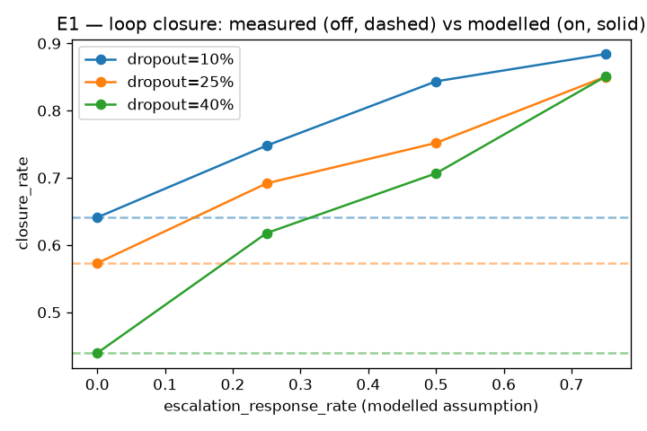
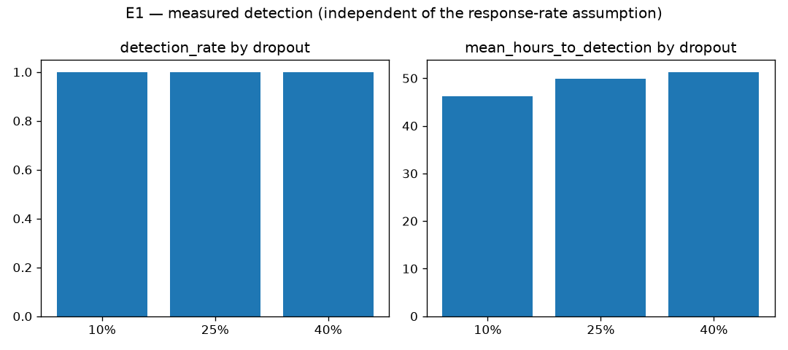

| escalation_on | dropout_rate | response_rate | closure_rate | n_seeds |
|---|---|---|---|---|
| False | 0.100 | 0.641 | 3 | |
| False | 0.250 | 0.573 | 3 | |
| False | 0.400 | 0.439 | 3 | |
| True | 0.100 | 0.000 | 0.641 | 3 |
| True | 0.100 | 0.250 | 0.748 | 3 |
| True | 0.100 | 0.500 | 0.844 | 3 |
| True | 0.100 | 0.750 | 0.884 | 3 |
| True | 0.250 | 0.000 | 0.573 | 3 |
| True | 0.250 | 0.250 | 0.692 | 3 |
| True | 0.250 | 0.500 | 0.752 | 3 |
| True | 0.250 | 0.750 | 0.850 | 3 |
| True | 0.400 | 0.000 | 0.439 | 3 |
| True | 0.400 | 0.250 | 0.618 | 3 |
| True | 0.400 | 0.500 | 0.707 | 3 |
| True | 0.400 | 0.750 | 0.851 | 3 |

| dropout_rate | detection_rate | mean_hours_to_detection | escalations_raised | escalations_false_positive | dropped_total | n_seeds |
|---|---|---|---|---|---|---|
| 0.100 | 1.000 | 46.220 | 44.667 | 23 | 21.667 | 12 |
| 0.250 | 1.000 | 49.852 | 45.333 | 19.333 | 26 | 12 |
| 0.400 | 1.000 | 51.311 | 48.333 | 14 | 34.333 | 12 |